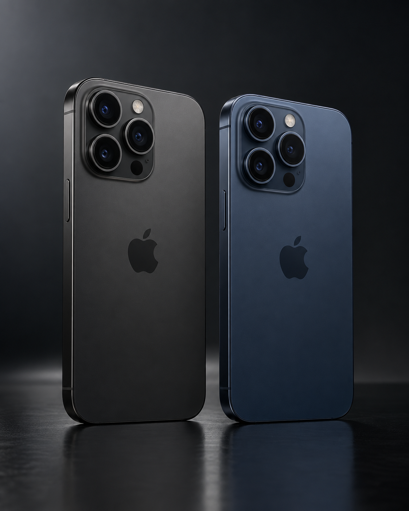

IPHONE 16 PRO · 128 GB
Todo Pro.
Sin dudas.
Elegí color, conocé cada especificación y comprá con respaldo de Phone Store MVD.$ 57.990Comprar ahora →
Sistema ProTriple cámara avanzada para foto y video.128 GBEspacio para tu día a día.6 mesesGarantía Phone Store MVD desde la venta.Envío cuidadoPreparación y seguimiento a todo Uruguay.INFORMACIÓN DEL EQUIPO
Una ficha clara antes de decidir.
Qué incluyeEquipo, cable USB‑C y documentación original según disponibilidad.CondiciónNuevo sellado. La condición exacta, color y stock se confirman antes de pagar.GarantíaSe registra con fecha de venta y número de serie o IMEI para una cobertura de seis meses.